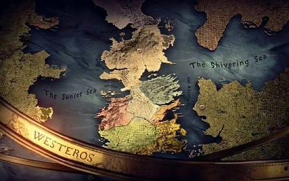

Westeros
{kind=link}
A história de As Crônicas de Gelo e Fogo se passa em Westeros, que é um dos quatro continentes conhecidos no mundo. A maior parte de sua área equivale aos Sete Reinos. Os outros dois continentes conhecidos são Essos, um vasto continente localizado a leste, atravessando o Mar Estreito, e Sothoryos, um continente inexplorado a sudeste de Westeros atravessando o Mar de Verão. As nações mais próximas de Westeros são as Cidades Livres, um grupo de cidades-estado independentes ao longo da borda ocidental de Essos.A sul de Westeros se localizam as Ilhas de Verão.
Geografia
Westeros é um continente vasto e ligeiramente estreito, estendendo-se do sul de Dorne até as Terras de Sempre Inverno, onde presume-se que esteja a calota polar, no extremo norte, onde o território permanece amplamente desconhecido devido às suas baixas temperaturas e seus hostis habitantes, os selvagens. Embora não haja escala nos mapas que aparecem nos livros, GRRM afirmou que a Muralha se estende por mais de 400km. Assim Westeros se estende por mais de 14.400 km de norte a sul, e 1400 km de leste a oeste em seu ponto mais largo. Suas fronteiras na costa leste são separadas de Essos pelo Mar Estreito e pela cadeia de ilhas conhecidas como os Degraus, onde outrora foi uma ponte de terra. A sul, no Mar de Verão, encontramos as Ilhas de Verão. As terras do Norte de Westeros são menos densamente povoadas do que as do sul, apesar de ter tamanho equivalente. As cinco principais cidade, da maior à menor, são: Porto Real, Vilavelha, Lannisporto, Vila Gaivota e Porto Branco. Westeros era originalmente dividido em vários reinos independentes antes da unificação ocorrida na Guerra da Conquista. Após a guerra, todas as nações ao sul da Muralha (exceto Dorne, que foi conquistada posteriomente), ficaram sob a monarquia da Casa Targaryen e conhecidas como os Sete Reinos.
Para Lá da Muralha
Se estende do norte da Muralha até as Terras de Sempre Inverno. A maior parte do território é coberto pela Floresta Sombria e composta de muitos lagos e rios, abrigando estranhos animais nas montanhas chamadas de Presas de Gelo. A região apresenta um clima extremamente frio e severo, permitindo que apenas um pequeno número de pessoas consiga habitar a região. Os selvagens, como são conhecidos, vivem em pequenas vilas.
Sete Reinos
Westeros estava dividido em seu princípio em vários reinos pequenos e independentes, até sua unificação durante a Conquista Targaryen. Depois desta guerra, as diferentes regiões e reinos se uniram sob o domínio da Casa Targaryen no que hoje se conhece como os Sete Reinos.
O Norte
O Norte é a maior região, quase tão grande quanto os outros seis reinos a sul combinados. É pouco povoada, com um vasto deserto gelado, florestas e montanhas cobertas de pinheiros e de neve. O clima é frio e seco durante o inverno, e neva mesmo durante o verão. A fronteira norte é a Muralha, lar da Patrulha da Noite, e a sul o Gargalo, um local pantanoso entre dois oceanos onde se localiza Fosso Cailin, fortaleza dos Primeiros Homens. As características do Gargalo e a posição de Fosso Cailin tornam quase impossível que um exército do sul consiga invadir o Norte. O Norte tem sido governado pela Casa Stark de Winterfell há séculos, primeiro como Reis do Norte e depois como suseranos. A maioria de seus habitantes ainda cultua os deuses antigos, mas alguns, principalmente ao redor de Porto Branco, são fiéis à Fé dos Sete. Bastardos criados no Norte têm sobrenome Snow.
As Ilhas de Ferro
As Ilhas de Ferro são um conjunto de sete ilhas na costa ocidental de Westeros, sendo algumas delas Pyke, Grande Wyk, Velha Wyk e Harlaw. Os habitantes dessas ilhas são conhecidos como homens de ferro pelos outros povos de Westeros, mas se autodenominam "nascidos no ferro". São governados pelos Greyjoy de Pyke, escolhidos para governar após o fim da linhagem de Harren, o Negro, na Guerra da Conquista. Antes da chegada de Aegon, os homens de ferro também governavam parte das Terras Ocidentais e das Terras Fluviais. Os homens de ferro são marinheiros, e sua supremacia naval é inquestionável. A Fé dos Sete tem poucos adeptos na região, onde predomina um deus local, o Deus Afogado. Bastardos criados nas Ilhas de Ferro têm sobrenome Pyke.
As Terras Fluviais
São as férteis terras entre os vaus do Tridente. São dominadas pelos Tully de Correrrio. À época da Conquistas, as Terras Fluviais eram governadas pelas Ilhas de Ferro, de modo que os Tully nunca foram reis, mas foram senhores do rio rebeldes que se viraram contra Harren, o Negro e lutaram ao lado de Aegon, o Conquistador. Bastardos criados nas Terras Fluviais têm sobrenome Rivers.
O Vale de Arryn
O Vale se localiza a leste das Terras Fluviais e é quase todo cercado pelas Montanhas da Lua. É constituído por imensas cadeias montanhosas, onde as pessoas vivem nos vales e ao longo da costa. O Vale é governado pela Casa Arryn, uma das mais antigas linhas de nobreza ândala e outrora Reis do Vale antes da chegada de Aegon. Sua fortaleza, o Ninho da Águia, fica no alto de uma montanha e chega a ser um castelo pequeno, mas é dito inexpugnável contra cerco ou ataque. O caminho para o topo é traiçoeiro. Devido ao rigoroso inverno do Vale, as viagens por esse caminho ficam temporariamente bloqueadas. Clãs das montanhas tornam o caminho ainda mais perigoso. Bastardos criados no Vale têm sobrenome Stone.
As Terras Ocidentais
São as terras a oeste das Terras Fluviais e a norte da Campina. É uma região pequena, onde se localizam as minas de ouro e prata mais importantes do continente. São governados pelos Lannister de Rochedo Casterly, ex-reis do Rochedo. As pessoas da região são geralmente chamadas de ocidentais. Lannisporto, comandado por Rochedo Casterly, é uma das maiores cidades e um dos principais portos do continente. Bastardos criados nas terras ocidentais têm sobrenome Hill.
As Terras da Coroa
São terras comandadas diretamente pelo Trono de Ferro. Compõe basicamente Porto Real e as terras circundantes, como Rosby e Stokeworth. Ficam ao sul do Vale, a sudeste do Tridente, a leste das Terras Ocidentais e a norte das Terras da Tempestade. Bastardos criados nas Terras da Coroa têm sobrenome Waters.
A Campina
É a segunda maior região, abrangendo uma extensão da parte mais fértil do continente, bem povoada e com muitas vilas. É governada pela Casa Tyrell de Jardim de Cima. Os Tyrell eram intendentes do Rei Mern Gardener, da extinta Casa Gardener. Depois que Mern foi morto no Campo de Fogo, os Tyrell renderam o castelo a Aegon e foram recompensados com os títulos e terras de Mern. Os vassalos dos Tyrell frequentemente lutam com os dorneses do sul, mantendo uma velha rivalidade. As fronteiras entre as regiões, chamadas de Marcas, são preenchidas no norte por senhores da Campina. Na Campina se localiza Vilavelha, a segunda maior cidade de Westeros, lar da Cidadela, recanto dos meistres, além de conter a antiga sede da Fé, o Septo Estrelado. Bastardos criados na Campina têm sobrenome Flowers.
As Terras da Tempestade
As Terras da Tempestade, ao sul das Terras da Coroa, se estendem até o Mar de Dorne. É uma das menores regiões de Westeros, uma terra cheia de montanhas e florestas. Antes da Conquista, eram governados pelos Reis da Tempestade. O último de sua linhagem, Argilac, o Arrogante, foi derrotado por Orys Baratheon, que recebeu suas terras e títulos. As Marcas estão nessa região, e eram comuns pontos de batalha antes de Dorne ser anexada aos Sete Reinos. Bastardos criados nas Terras da Tempestade têm sobrenome Storm.
Dorne
Dorne é a região mais meridional de Westeros. Se estende desde as Marcas até a costa sul do continente. É o local mais quente dos Sete Reinos, com um grande deserto escaldante. A reputação dos dorneses também diz que eles possuem "sangue quente". Diferem tanto históricamente quando etnicamente dos demais reinos por causa da Invasão Roinar. Sua culinária, aparência e arquitetura se assemelham às das culturas do Mediterrâneo, como Grécia e Turquia, enquanto os demais reinos possuem cultura semelhante às da Europa Ocidental. Eles adotaram muito da cultura roinar, onde o título de Rei é substituído pelo de Príncipe, e onde o filho mais velho herda os títulos do pai, não importando se é homem ou mulher. São dominados pela Casa Martell de Lançassolar. Dorne foi o único reino de Westeros que pôde resistir com êxito à Conquista de Aegon, tendo se juntado aos Sete Reinos quase um século depois através de um casamento. Isso deu aos dorneses relativa independência, como a manutenção de seus títulos de Príncipes. Bastardos criados em Dorne têm sobrenome Sand